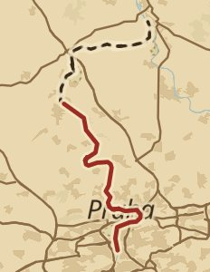

Objevovat
Vše
Zdarma
Skutečné trasy
Do 100 km
Právě procházíte
Vltavská stezka
35,6 z 62 km · etapa 3 ze 4

10 zastávek a 28 malých objevů. Zbývá 16 míst, nejbližší za 1,4 km.
Další cesty
Horský hřeben
Zdarma
78 km · 4 etapy · střední
Skutečná trasa
· 46 míst
Podél Labe
Balíček
240 km · 12 etap · náročná
Zjednodušená trasa
· 128 míst
Cesta na Měsíc
Zdarma
384 400 km · na roky
Symbolická cesta
· milníky
Rozjetou výpravu vždy dokončíte zdarma. Platí se jen za nové cesty.
Domů
Výprava
Objevovat
Kronika